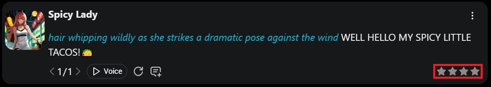

SpicyChat 踩坑记：这五个问题我真的以为要重装软件
从山寨应用到记忆残留，从订阅踩坑到举报误用，聊聊 SpicyChat 上手以来我亲手踩过的五个真坑，附每条的提前规避方案。
说实话，SpicyChat官网看着就像个"打开就能玩"的东西——浏览器里注册完，选个喜欢的角色，直接开聊。我第一次用也是这么想的，结果前后踩了五个坑，前两个差点让我以为这软件本身就有 bug。写这篇不是吐槽，是把我踩过的雷摊开，让你别跟我一样挨个试一遍。
坑一：应用商店搜到的，大概率不是它
这个坑我踩得最早，也最没悬念。事情是这样的：我习惯用手机装东西，iOS 商店搜了一下"Spi..."，蹦出来好几个应用，有一个图标看着挺像，我点进去看介绍——完全不是那么回事。后来才知道，官方 iOS 应用早在 2025 年 8 月就已经下架了，苹果用户现在只能走网页版加 PWA。
更离谱的是安卓那边。谷歌商店里有好几个套着相似名字的第三方应用，有的甚至直接用了 SpicyChat 的宣传图，但进去之后是完全不同的产品——收费模式不一样、内容尺度不一样，甚至连登录都要求单独注册新账户。我朋友就中招了，下了个山寨版，充了二十刀进去发现不对，钱退不回来。
症状就是"搜出来好几个同名的，不知道哪个是真的"。原因也简单：官方不走商店分发，iOS 下架、安卓只从自己网站给 APK，商店里自然被蹭了一波流量的杂牌占了坑。
解法其实只有一条死规则：iOS 用户打开 Safari 访问官方网站，用分享按钮「添加到主屏幕」装 PWA，之后从主屏图标启动，体验和原生应用差不多，全屏运行；安卓用户只从官方下载拿安装包，装的时候临时允许"安装未知来源应用"，装完赶紧关回去。应用商店里搜到的，不管图标多像，一律跳过。
坑二：删了对话，角色还记得你说过什么
这坑让我起了一身鸡皮疙瘩。有一次跟角色聊了个比较敏感的支线，聊完觉得不太对，直接删了整段对话——心里想这就干净了。结果过了两天开了个新会话，角色开口就提到了上次那段对话里的细节。我当时以为是缓存没清干净，刷新了好几次页面，还是记得。
原因是 SpicyChat 的记忆机制有两层：一层是对话消息本身，删了就是删了；另一层是语义记忆——平台会自动把你们对话里的关键信息提炼成独立的记忆条目，这些条目存在单独的记忆管理器里，跟对话消息是两回事。你删消息、删对话，记忆条目纹丝不动，下次开新会话角色还能调出来用。
解法分三步，按顺序来：先删消息、再去记忆管理器手动清关联条目、最后删整段对话。三步都走完才算真正干净。我后来养成习惯了，敏感剧情结束后第一件事就是打开记忆管理器刷一遍，看到相关的条目直接点删。
坑三：最低档订阅，除了干净什么都没变
我一开始买了最低档，每月五块多，想着先试试。体验变化确实有：广告没了、不用排队、有记忆管理器、多了两个轻量模型可选。但用了一周我发现最核心的问题没解决——角色还是动不动就"失忆"，聊到第十轮开始忘记前面说过什么，回复长度也没比免费档长多少。
后来去SpicyChat文档翻了一下才看明白：最低档买的是体验改善，不是能力升级。上下文窗口还是 4K，回复上限还是 180，语义记忆 2.0 和会话配图都没有。真正的分水岭在中档，8K 窗口直接翻倍，回复上限放宽到 300，语义记忆 2.0 和高级模型也在这一档才解锁。换句话说，对"对话质量"有诉求的人，最低档可以直接跳过，省下那五块钱加到中档里。
症状就是"付了钱，但角色还是会失忆"。原因是我没看清楚权益表的小字——最低档把去广告、免排队这些"不难受"的东西都给你了，但把"更好"的东西全卡在了中档以上。解法很简单：订阅前先想清楚自己要什么，只想安静点不排队就最低档，想要剧情质量直接从中档起步。
坑四：把举报按钮当差评用
有一次跟一个角色聊，AI 回复特别拉胯，剧情逻辑全错。我随手点了回复右上角的三点菜单，看到个「举报消息」就点了。结果那条回复直接被从对话里移除了，我得重新发消息才能让角色继续。更尴尬的是，后来我才知道举报按钮根本不是干这个的。
症状就是"点了举报，回复没了，剧情断了"。原因是我把举报和差评搞混了。SpicyChat 里，举报消息针对的是违反社区准则的内容——比如未成年人内容、非自愿情节、仇恨言论、极端暴力这些。它的作用是把违规内容送进审核队列，同时从你的对话里移除那条有问题的回复。而"角色写得不好""回复平庸""忘记设定"这些情况，应该用的是重生成（Regenerate）、变体（Swipe）或者星级评分那一套。
还有个容易混淆的点：举报角色本身（头像、简介、设定违规，比如盗用他人角色、用真人照片）和举报单条消息是两个入口，别搞错了。

顺带安心一句，你和角色的聊天记录对角色创作者是完全不可见的，官方明确说明创作者看不到任何用户的对话内容——所以也别担心给角色打低分被创作者看到。
坑五：用主邮箱注册，聊完不敢删号
这个坑没那么戏剧性，但长期看最闹心。我第一个账号用了工作邮箱注册，想着省事。后来发现自己在上面聊了好几个不同的剧情线，有的比较敏感。某天突然意识到，这些对话记录、记忆条目、化身设定，全绑在我的工作邮箱上——我想删号重来都得慎重，毕竟删号的流程是：清记忆 → 删所有对话 → 删化身 → 取消订阅 → 提交账号删除请求。每一步都不能跳。
原因是我注册时没多想，顺手用了常用邮箱。而 SpicyChat 的条款虽然不说"我们会把你的数据卖了"，但也没说"我们绝对不做"——对训练数据使用和数据保留期的表述比较含糊。账单是公司名义显示，这点好；但对话记录存在服务器上、审核机制可以处理被举报内容，这些都是明文写在条款里的。
解法很直接：注册时用独立邮箱，跟主邮箱、工作邮箱彻底隔离。密码别复用。谷歌一键登录确实省事，但把账号绑定暴露给了谷歌生态，介意的话就用纯邮箱注册。共用设备上随手退出登录，对话记录默认保持在登录态里，浏览器关了也不丢。
防坑清单（写在最后）
把上面五个坑浓缩成一张速查表，下次上手直接对照：
- 安装来源死规则：iOS 只走官网 PWA，安卓只从官网下 APK，应用商店搜的一律跳过；
- 删除流程三步走：删消息 → 清记忆管理器 → 删对话，顺序不能乱；
- 订阅先想需求：要质量直接从中档开始，最低档只适合"想安静点"的人；
- 举报 vs 差评别搞混：违规内容才举报，写得不好用重生成或评分；
- 注册就用独立邮箱：别把工作邮箱或主邮箱跟这个绑在一起，想删号时不会纠结。
知道这些坑之后，SpicyChat 其实相当省心——它的核心功能就是"跟 AI 角色聊天"，做得还算干净。踩过这五个雷，后面用起来基本不会再出什么意外了。对了，上面这些梳理过的资料在 GitHub、Gitee 和 GitCode 三个仓库都有存，不同网络环境选一个能通的就行。